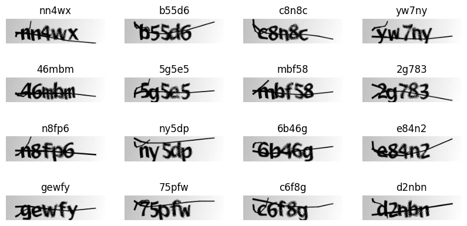
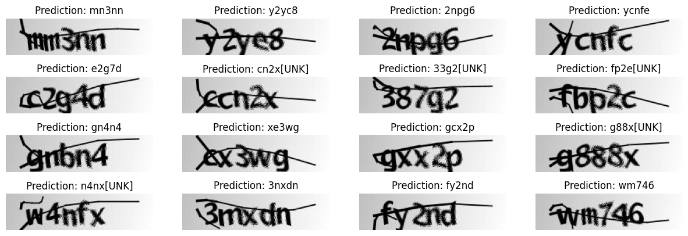

OCR model for reading Captchas
Author: A_K_Nain
Date created: 2020/06/14
Last modified: 2024/03/13
Description: How to implement an OCR model using CNNs, RNNs and CTC loss.

Introduction
This example demonstrates a simple OCR model built with the Functional API. Apart from combining CNN and RNN, it also illustrates how you can instantiate a new layer and use it as an "Endpoint layer" for implementing CTC loss. For a detailed guide to layer subclassing, please check out this page in the developer guides.
Setup
import os
os.environ["KERAS_BACKEND"] = "tensorflow"
import numpy as np
import matplotlib.pyplot as plt
from pathlib import Path
import tensorflow as tf
import keras
from keras import ops
from keras import layers
Load the data: Captcha Images
Let's download the data.
!curl -LO https://github.com/AakashKumarNain/CaptchaCracker/raw/master/captcha_images_v2.zip
!unzip -qq captcha_images_v2.zip
% Total % Received % Xferd Average Speed Time Time Time Current
Dload Upload Total Spent Left Speed
0 0 0 0 0 0 0 0 --:--:-- --:--:-- --:--:-- 0
100 8863k 100 8863k 0 0 11.9M 0 --:--:-- --:--:-- --:--:-- 141M
The dataset contains 1040 captcha files as png images. The label for each sample is a string,
the name of the file (minus the file extension).
We will map each character in the string to an integer for training the model. Similary,
we will need to map the predictions of the model back to strings. For this purpose
we will maintain two dictionaries, mapping characters to integers, and integers to characters,
respectively.
# Path to the data directory
data_dir = Path("./captcha_images_v2/")
# Get list of all the images
images = sorted(list(map(str, list(data_dir.glob("*.png")))))
labels = [img.split(os.path.sep)[-1].split(".png")[0] for img in images]
characters = set(char for label in labels for char in label)
characters = sorted(list(characters))
print("Number of images found: ", len(images))
print("Number of labels found: ", len(labels))
print("Number of unique characters: ", len(characters))
print("Characters present: ", characters)
# Batch size for training and validation
batch_size = 16
# Desired image dimensions
img_width = 200
img_height = 50
# Factor by which the image is going to be downsampled
# by the convolutional blocks. We will be using two
# convolution blocks and each block will have
# a pooling layer which downsample the features by a factor of 2.
# Hence total downsampling factor would be 4.
downsample_factor = 4
# Maximum length of any captcha in the dataset
max_length = max([len(label) for label in labels])
Number of images found: 1040
Number of labels found: 1040
Number of unique characters: 19
Characters present: ['2', '3', '4', '5', '6', '7', '8', 'b', 'c', 'd', 'e', 'f', 'g', 'm', 'n', 'p', 'w', 'x', 'y']
Preprocessing
# Mapping characters to integers
char_to_num = layers.StringLookup(vocabulary=list(characters), mask_token=None)
# Mapping integers back to original characters
num_to_char = layers.StringLookup(
vocabulary=char_to_num.get_vocabulary(), mask_token=None, invert=True
)
def split_data(images, labels, train_size=0.9, shuffle=True):
# 1. Get the total size of the dataset
size = len(images)
# 2. Make an indices array and shuffle it, if required
indices = ops.arange(size)
if shuffle:
indices = keras.random.shuffle(indices)
# 3. Get the size of training samples
train_samples = int(size * train_size)
# 4. Split data into training and validation sets
x_train, y_train = images[indices[:train_samples]], labels[indices[:train_samples]]
x_valid, y_valid = images[indices[train_samples:]], labels[indices[train_samples:]]
return x_train, x_valid, y_train, y_valid
# Splitting data into training and validation sets
x_train, x_valid, y_train, y_valid = split_data(np.array(images), np.array(labels))
def encode_single_sample(img_path, label):
# 1. Read image
img = tf.io.read_file(img_path)
# 2. Decode and convert to grayscale
img = tf.io.decode_png(img, channels=1)
# 3. Convert to float32 in [0, 1] range
img = tf.image.convert_image_dtype(img, tf.float32)
# 4. Resize to the desired size
img = ops.image.resize(img, [img_height, img_width])
# 5. Transpose the image because we want the time
# dimension to correspond to the width of the image.
img = ops.transpose(img, axes=[1, 0, 2])
# 6. Map the characters in label to numbers
label = char_to_num(tf.strings.unicode_split(label, input_encoding="UTF-8"))
# 7. Return a dict as our model is expecting two inputs
return {"image": img, "label": label}
Create Dataset objects
train_dataset = tf.data.Dataset.from_tensor_slices((x_train, y_train))
train_dataset = (
train_dataset.map(encode_single_sample, num_parallel_calls=tf.data.AUTOTUNE)
.batch(batch_size)
.prefetch(buffer_size=tf.data.AUTOTUNE)
)
validation_dataset = tf.data.Dataset.from_tensor_slices((x_valid, y_valid))
validation_dataset = (
validation_dataset.map(encode_single_sample, num_parallel_calls=tf.data.AUTOTUNE)
.batch(batch_size)
.prefetch(buffer_size=tf.data.AUTOTUNE)
)
Visualize the data
_, ax = plt.subplots(4, 4, figsize=(10, 5))
for batch in train_dataset.take(1):
images = batch["image"]
labels = batch["label"]
for i in range(16):
img = (images[i] * 255).numpy().astype("uint8")
label = tf.strings.reduce_join(num_to_char(labels[i])).numpy().decode("utf-8")
ax[i // 4, i % 4].imshow(img[:, :, 0].T, cmap="gray")
ax[i // 4, i % 4].set_title(label)
ax[i // 4, i % 4].axis("off")
plt.show()

Model
def ctc_batch_cost(y_true, y_pred, input_length, label_length):
label_length = ops.cast(ops.squeeze(label_length, axis=-1), dtype="int32")
input_length = ops.cast(ops.squeeze(input_length, axis=-1), dtype="int32")
sparse_labels = ops.cast(
ctc_label_dense_to_sparse(y_true, label_length), dtype="int32"
)
y_pred = ops.log(ops.transpose(y_pred, axes=[1, 0, 2]) + keras.backend.epsilon())
return ops.expand_dims(
tf.compat.v1.nn.ctc_loss(
inputs=y_pred, labels=sparse_labels, sequence_length=input_length
),
1,
)
def ctc_label_dense_to_sparse(labels, label_lengths):
label_shape = ops.shape(labels)
num_batches_tns = ops.stack([label_shape[0]])
max_num_labels_tns = ops.stack([label_shape[1]])
def range_less_than(old_input, current_input):
return ops.expand_dims(ops.arange(ops.shape(old_input)[1]), 0) < tf.fill(
max_num_labels_tns, current_input
)
init = ops.cast(tf.fill([1, label_shape[1]], 0), dtype="bool")
dense_mask = tf.compat.v1.scan(
range_less_than, label_lengths, initializer=init, parallel_iterations=1
)
dense_mask = dense_mask[:, 0, :]
label_array = ops.reshape(
ops.tile(ops.arange(0, label_shape[1]), num_batches_tns), label_shape
)
label_ind = tf.compat.v1.boolean_mask(label_array, dense_mask)
batch_array = ops.transpose(
ops.reshape(
ops.tile(ops.arange(0, label_shape[0]), max_num_labels_tns),
tf.reverse(label_shape, [0]),
)
)
batch_ind = tf.compat.v1.boolean_mask(batch_array, dense_mask)
indices = ops.transpose(
ops.reshape(ops.concatenate([batch_ind, label_ind], axis=0), [2, -1])
)
vals_sparse = tf.compat.v1.gather_nd(labels, indices)
return tf.SparseTensor(
ops.cast(indices, dtype="int64"),
vals_sparse,
ops.cast(label_shape, dtype="int64")
)
class CTCLayer(layers.Layer):
def __init__(self, name=None):
super().__init__(name=name)
self.loss_fn = ctc_batch_cost
def call(self, y_true, y_pred):
# Compute the training-time loss value and add it
# to the layer using `self.add_loss()`.
batch_len = ops.cast(ops.shape(y_true)[0], dtype="int64")
input_length = ops.cast(ops.shape(y_pred)[1], dtype="int64")
label_length = ops.cast(ops.shape(y_true)[1], dtype="int64")
input_length = input_length * ops.ones(shape=(batch_len, 1), dtype="int64")
label_length = label_length * ops.ones(shape=(batch_len, 1), dtype="int64")
loss = self.loss_fn(y_true, y_pred, input_length, label_length)
self.add_loss(loss)
# At test time, just return the computed predictions
return y_pred
def build_model():
# Inputs to the model
input_img = layers.Input(
shape=(img_width, img_height, 1), name="image", dtype="float32"
)
labels = layers.Input(name="label", shape=(None,), dtype="float32")
# First conv block
x = layers.Conv2D(
32,
(3, 3),
activation="relu",
kernel_initializer="he_normal",
padding="same",
name="Conv1",
)(input_img)
x = layers.MaxPooling2D((2, 2), name="pool1")(x)
# Second conv block
x = layers.Conv2D(
64,
(3, 3),
activation="relu",
kernel_initializer="he_normal",
padding="same",
name="Conv2",
)(x)
x = layers.MaxPooling2D((2, 2), name="pool2")(x)
# We have used two max pool with pool size and strides 2.
# Hence, downsampled feature maps are 4x smaller. The number of
# filters in the last layer is 64. Reshape accordingly before
# passing the output to the RNN part of the model
new_shape = ((img_width // 4), (img_height // 4) * 64)
x = layers.Reshape(target_shape=new_shape, name="reshape")(x)
x = layers.Dense(64, activation="relu", name="dense1")(x)
x = layers.Dropout(0.2)(x)
# RNNs
x = layers.Bidirectional(layers.LSTM(128, return_sequences=True, dropout=0.25))(x)
x = layers.Bidirectional(layers.LSTM(64, return_sequences=True, dropout=0.25))(x)
# Output layer
x = layers.Dense(
len(char_to_num.get_vocabulary()) + 1, activation="softmax", name="dense2"
)(x)
# Add CTC layer for calculating CTC loss at each step
output = CTCLayer(name="ctc_loss")(labels, x)
# Define the model
model = keras.models.Model(
inputs=[input_img, labels], outputs=output, name="ocr_model_v1"
)
# Optimizer
opt = keras.optimizers.Adam()
# Compile the model and return
model.compile(optimizer=opt)
return model
# Get the model
model = build_model()
model.summary()
Model: "ocr_model_v1"
┏━━━━━━━━━━━━━━━━━━━━━┳━━━━━━━━━━━━━━━━━━━┳━━━━━━━━━┳━━━━━━━━━━━━━━━━━━━━━━┓ ┃ Layer (type) ┃ Output Shape ┃ Param # ┃ Connected to ┃ ┡━━━━━━━━━━━━━━━━━━━━━╇━━━━━━━━━━━━━━━━━━━╇━━━━━━━━━╇━━━━━━━━━━━━━━━━━━━━━━┩ │ image (InputLayer) │ (None, 200, 50, │ 0 │ - │ │ │ 1) │ │ │ ├─────────────────────┼───────────────────┼─────────┼──────────────────────┤ │ Conv1 (Conv2D) │ (None, 200, 50, │ 320 │ image[0][0] │ │ │ 32) │ │ │ ├─────────────────────┼───────────────────┼─────────┼──────────────────────┤ │ pool1 │ (None, 100, 25, │ 0 │ Conv1[0][0] │ │ (MaxPooling2D) │ 32) │ │ │ ├─────────────────────┼───────────────────┼─────────┼──────────────────────┤ │ Conv2 (Conv2D) │ (None, 100, 25, │ 18,496 │ pool1[0][0] │ │ │ 64) │ │ │ ├─────────────────────┼───────────────────┼─────────┼──────────────────────┤ │ pool2 │ (None, 50, 12, │ 0 │ Conv2[0][0] │ │ (MaxPooling2D) │ 64) │ │ │ ├─────────────────────┼───────────────────┼─────────┼──────────────────────┤ │ reshape (Reshape) │ (None, 50, 768) │ 0 │ pool2[0][0] │ ├─────────────────────┼───────────────────┼─────────┼──────────────────────┤ │ dense1 (Dense) │ (None, 50, 64) │ 49,216 │ reshape[0][0] │ ├─────────────────────┼───────────────────┼─────────┼──────────────────────┤ │ dropout (Dropout) │ (None, 50, 64) │ 0 │ dense1[0][0] │ ├─────────────────────┼───────────────────┼─────────┼──────────────────────┤ │ bidirectional │ (None, 50, 256) │ 197,632 │ dropout[0][0] │ │ (Bidirectional) │ │ │ │ ├─────────────────────┼───────────────────┼─────────┼──────────────────────┤ │ bidirectional_1 │ (None, 50, 128) │ 164,352 │ bidirectional[0][0] │ │ (Bidirectional) │ │ │ │ ├─────────────────────┼───────────────────┼─────────┼──────────────────────┤ │ label (InputLayer) │ (None, None) │ 0 │ - │ ├─────────────────────┼───────────────────┼─────────┼──────────────────────┤ │ dense2 (Dense) │ (None, 50, 21) │ 2,709 │ bidirectional_1[0][… │ ├─────────────────────┼───────────────────┼─────────┼──────────────────────┤ │ ctc_loss (CTCLayer) │ (None, 50, 21) │ 0 │ label[0][0], │ │ │ │ │ dense2[0][0] │ └─────────────────────┴───────────────────┴─────────┴──────────────────────┘
Total params: 432,725 (1.65 MB)
Trainable params: 432,725 (1.65 MB)
Non-trainable params: 0 (0.00 B)
Training
# TODO restore epoch count.
epochs = 100
early_stopping_patience = 10
# Add early stopping
early_stopping = keras.callbacks.EarlyStopping(
monitor="val_loss", patience=early_stopping_patience, restore_best_weights=True
)
# Train the model
history = model.fit(
train_dataset,
validation_data=validation_dataset,
epochs=epochs,
callbacks=[early_stopping],
)
Epoch 1/100
59/59 ━━━━━━━━━━━━━━━━━━━━ 22s 229ms/step - loss: 35.8756 - val_loss: 16.3966
Epoch 2/100
59/59 ━━━━━━━━━━━━━━━━━━━━ 14s 235ms/step - loss: 16.4092 - val_loss: 16.3648
Epoch 3/100
59/59 ━━━━━━━━━━━━━━━━━━━━ 13s 224ms/step - loss: 16.3922 - val_loss: 16.3571
Epoch 4/100
59/59 ━━━━━━━━━━━━━━━━━━━━ 13s 218ms/step - loss: 16.3749 - val_loss: 16.3602
Epoch 5/100
59/59 ━━━━━━━━━━━━━━━━━━━━ 20s 210ms/step - loss: 16.3756 - val_loss: 16.3513
Epoch 6/100
59/59 ━━━━━━━━━━━━━━━━━━━━ 14s 236ms/step - loss: 16.3737 - val_loss: 16.3466
Epoch 7/100
59/59 ━━━━━━━━━━━━━━━━━━━━ 13s 227ms/step - loss: 16.3591 - val_loss: 16.3479
Epoch 8/100
59/59 ━━━━━━━━━━━━━━━━━━━━ 13s 219ms/step - loss: 16.3505 - val_loss: 16.3436
Epoch 9/100
59/59 ━━━━━━━━━━━━━━━━━━━━ 13s 213ms/step - loss: 16.3440 - val_loss: 16.3386
Epoch 10/100
59/59 ━━━━━━━━━━━━━━━━━━━━ 13s 226ms/step - loss: 16.3312 - val_loss: 16.3066
Epoch 11/100
59/59 ━━━━━━━━━━━━━━━━━━━━ 13s 224ms/step - loss: 16.3077 - val_loss: 16.3288
Epoch 12/100
59/59 ━━━━━━━━━━━━━━━━━━━━ 13s 226ms/step - loss: 16.2746 - val_loss: 16.2750
Epoch 13/100
59/59 ━━━━━━━━━━━━━━━━━━━━ 13s 214ms/step - loss: 16.1853 - val_loss: 16.1606
Epoch 14/100
59/59 ━━━━━━━━━━━━━━━━━━━━ 21s 229ms/step - loss: 16.0636 - val_loss: 16.1616
Epoch 15/100
59/59 ━━━━━━━━━━━━━━━━━━━━ 13s 223ms/step - loss: 15.9873 - val_loss: 16.0928
Epoch 16/100
59/59 ━━━━━━━━━━━━━━━━━━━━ 13s 224ms/step - loss: 15.9339 - val_loss: 16.0070
Epoch 17/100
59/59 ━━━━━━━━━━━━━━━━━━━━ 13s 213ms/step - loss: 15.8379 - val_loss: 15.8443
Epoch 18/100
59/59 ━━━━━━━━━━━━━━━━━━━━ 13s 212ms/step - loss: 15.7156 - val_loss: 15.6414
Epoch 19/100
59/59 ━━━━━━━━━━━━━━━━━━━━ 21s 224ms/step - loss: 15.5618 - val_loss: 15.5937
Epoch 20/100
59/59 ━━━━━━━━━━━━━━━━━━━━ 20s 219ms/step - loss: 15.4386 - val_loss: 15.4481
Epoch 21/100
59/59 ━━━━━━━━━━━━━━━━━━━━ 13s 215ms/step - loss: 15.2270 - val_loss: 15.4191
Epoch 22/100
59/59 ━━━━━━━━━━━━━━━━━━━━ 14s 229ms/step - loss: 15.0565 - val_loss: 15.1226
Epoch 23/100
59/59 ━━━━━━━━━━━━━━━━━━━━ 13s 226ms/step - loss: 14.8641 - val_loss: 14.9598
Epoch 24/100
59/59 ━━━━━━━━━━━━━━━━━━━━ 13s 225ms/step - loss: 14.6488 - val_loss: 14.7074
Epoch 25/100
59/59 ━━━━━━━━━━━━━━━━━━━━ 20s 213ms/step - loss: 14.3843 - val_loss: 14.4713
Epoch 26/100
59/59 ━━━━━━━━━━━━━━━━━━━━ 13s 224ms/step - loss: 14.1244 - val_loss: 14.0645
Epoch 27/100
59/59 ━━━━━━━━━━━━━━━━━━━━ 13s 218ms/step - loss: 13.8279 - val_loss: 13.7670
Epoch 28/100
59/59 ━━━━━━━━━━━━━━━━━━━━ 20s 218ms/step - loss: 13.4959 - val_loss: 13.5277
Epoch 29/100
59/59 ━━━━━━━━━━━━━━━━━━━━ 12s 206ms/step - loss: 13.2192 - val_loss: 13.2536
Epoch 30/100
59/59 ━━━━━━━━━━━━━━━━━━━━ 23s 248ms/step - loss: 12.9255 - val_loss: 12.8277
Epoch 31/100
59/59 ━━━━━━━━━━━━━━━━━━━━ 19s 220ms/step - loss: 12.5599 - val_loss: 12.6968
Epoch 32/100
59/59 ━━━━━━━━━━━━━━━━━━━━ 12s 207ms/step - loss: 12.2893 - val_loss: 12.3682
Epoch 33/100
59/59 ━━━━━━━━━━━━━━━━━━━━ 12s 205ms/step - loss: 11.8148 - val_loss: 11.7916
Epoch 34/100
59/59 ━━━━━━━━━━━━━━━━━━━━ 21s 215ms/step - loss: 11.3895 - val_loss: 11.6033
Epoch 35/100
59/59 ━━━━━━━━━━━━━━━━━━━━ 13s 216ms/step - loss: 11.0912 - val_loss: 11.1269
Epoch 36/100
59/59 ━━━━━━━━━━━━━━━━━━━━ 12s 206ms/step - loss: 10.7124 - val_loss: 10.8567
Epoch 37/100
59/59 ━━━━━━━━━━━━━━━━━━━━ 12s 203ms/step - loss: 10.2611 - val_loss: 10.5215
Epoch 38/100
59/59 ━━━━━━━━━━━━━━━━━━━━ 13s 220ms/step - loss: 9.9407 - val_loss: 10.2151
Epoch 39/100
59/59 ━━━━━━━━━━━━━━━━━━━━ 13s 213ms/step - loss: 9.5958 - val_loss: 9.6870
Epoch 40/100
59/59 ━━━━━━━━━━━━━━━━━━━━ 20s 208ms/step - loss: 9.2352 - val_loss: 9.2340
Epoch 41/100
59/59 ━━━━━━━━━━━━━━━━━━━━ 12s 202ms/step - loss: 8.7480 - val_loss: 8.9227
Epoch 42/100
59/59 ━━━━━━━━━━━━━━━━━━━━ 13s 218ms/step - loss: 8.2937 - val_loss: 8.7348
Epoch 43/100
59/59 ━━━━━━━━━━━━━━━━━━━━ 13s 214ms/step - loss: 8.0500 - val_loss: 8.3136
Epoch 44/100
59/59 ━━━━━━━━━━━━━━━━━━━━ 13s 213ms/step - loss: 7.7643 - val_loss: 7.9847
Epoch 45/100
59/59 ━━━━━━━━━━━━━━━━━━━━ 12s 207ms/step - loss: 7.2927 - val_loss: 7.9830
Epoch 46/100
59/59 ━━━━━━━━━━━━━━━━━━━━ 12s 200ms/step - loss: 7.0159 - val_loss: 7.4162
Epoch 47/100
59/59 ━━━━━━━━━━━━━━━━━━━━ 13s 217ms/step - loss: 6.8198 - val_loss: 7.1488
Epoch 48/100
59/59 ━━━━━━━━━━━━━━━━━━━━ 13s 213ms/step - loss: 6.4661 - val_loss: 7.0038
Epoch 49/100
59/59 ━━━━━━━━━━━━━━━━━━━━ 20s 210ms/step - loss: 6.1844 - val_loss: 6.7504
Epoch 50/100
59/59 ━━━━━━━━━━━━━━━━━━━━ 20s 201ms/step - loss: 5.8523 - val_loss: 6.5577
Epoch 51/100
59/59 ━━━━━━━━━━━━━━━━━━━━ 13s 225ms/step - loss: 5.7405 - val_loss: 6.4001
Epoch 52/100
59/59 ━━━━━━━━━━━━━━━━━━━━ 20s 215ms/step - loss: 5.3831 - val_loss: 6.3826
Epoch 53/100
59/59 ━━━━━━━━━━━━━━━━━━━━ 12s 202ms/step - loss: 5.1238 - val_loss: 6.0649
Epoch 54/100
59/59 ━━━━━━━━━━━━━━━━━━━━ 21s 218ms/step - loss: 4.9646 - val_loss: 5.8397
Epoch 55/100
59/59 ━━━━━━━━━━━━━━━━━━━━ 20s 213ms/step - loss: 4.7486 - val_loss: 5.7926
Epoch 56/100
59/59 ━━━━━━━━━━━━━━━━━━━━ 12s 206ms/step - loss: 4.4270 - val_loss: 5.7480
Epoch 57/100
59/59 ━━━━━━━━━━━━━━━━━━━━ 12s 199ms/step - loss: 4.3954 - val_loss: 5.7311
Epoch 58/100
59/59 ━━━━━━━━━━━━━━━━━━━━ 12s 205ms/step - loss: 4.2907 - val_loss: 5.6178
Epoch 59/100
59/59 ━━━━━━━━━━━━━━━━━━━━ 21s 211ms/step - loss: 4.0034 - val_loss: 5.3565
Epoch 60/100
59/59 ━━━━━━━━━━━━━━━━━━━━ 12s 208ms/step - loss: 3.7862 - val_loss: 5.3226
Epoch 61/100
59/59 ━━━━━━━━━━━━━━━━━━━━ 12s 198ms/step - loss: 3.7867 - val_loss: 5.1675
Epoch 62/100
59/59 ━━━━━━━━━━━━━━━━━━━━ 12s 198ms/step - loss: 3.3635 - val_loss: 4.9778
Epoch 63/100
59/59 ━━━━━━━━━━━━━━━━━━━━ 13s 223ms/step - loss: 3.3120 - val_loss: 5.0680
Epoch 64/100
59/59 ━━━━━━━━━━━━━━━━━━━━ 13s 213ms/step - loss: 3.2816 - val_loss: 4.9794
Epoch 65/100
59/59 ━━━━━━━━━━━━━━━━━━━━ 12s 209ms/step - loss: 3.1493 - val_loss: 4.9307
Epoch 66/100
59/59 ━━━━━━━━━━━━━━━━━━━━ 12s 199ms/step - loss: 2.8954 - val_loss: 4.6848
Epoch 67/100
59/59 ━━━━━━━━━━━━━━━━━━━━ 12s 200ms/step - loss: 2.9579 - val_loss: 4.7673
Epoch 68/100
59/59 ━━━━━━━━━━━━━━━━━━━━ 13s 224ms/step - loss: 2.8408 - val_loss: 4.7547
Epoch 69/100
59/59 ━━━━━━━━━━━━━━━━━━━━ 13s 212ms/step - loss: 2.5937 - val_loss: 4.6363
Epoch 70/100
59/59 ━━━━━━━━━━━━━━━━━━━━ 12s 206ms/step - loss: 2.5928 - val_loss: 4.6453
Epoch 71/100
59/59 ━━━━━━━━━━━━━━━━━━━━ 12s 198ms/step - loss: 2.5662 - val_loss: 4.6460
Epoch 72/100
59/59 ━━━━━━━━━━━━━━━━━━━━ 15s 249ms/step - loss: 2.5619 - val_loss: 4.7042
Epoch 73/100
59/59 ━━━━━━━━━━━━━━━━━━━━ 18s 211ms/step - loss: 2.3146 - val_loss: 4.5853
Epoch 74/100
59/59 ━━━━━━━━━━━━━━━━━━━━ 12s 210ms/step - loss: 2.1848 - val_loss: 4.5865
Epoch 75/100
59/59 ━━━━━━━━━━━━━━━━━━━━ 20s 199ms/step - loss: 2.1284 - val_loss: 4.6487
Epoch 76/100
59/59 ━━━━━━━━━━━━━━━━━━━━ 13s 218ms/step - loss: 2.0072 - val_loss: 4.5793
Epoch 77/100
59/59 ━━━━━━━━━━━━━━━━━━━━ 12s 209ms/step - loss: 1.8963 - val_loss: 4.6183
Epoch 78/100
59/59 ━━━━━━━━━━━━━━━━━━━━ 12s 211ms/step - loss: 1.7980 - val_loss: 4.7451
Epoch 79/100
59/59 ━━━━━━━━━━━━━━━━━━━━ 12s 198ms/step - loss: 1.7276 - val_loss: 4.6344
Epoch 80/100
59/59 ━━━━━━━━━━━━━━━━━━━━ 12s 200ms/step - loss: 1.7558 - val_loss: 4.5365
Epoch 81/100
59/59 ━━━━━━━━━━━━━━━━━━━━ 13s 221ms/step - loss: 1.6611 - val_loss: 4.4597
Epoch 82/100
59/59 ━━━━━━━━━━━━━━━━━━━━ 12s 209ms/step - loss: 1.6337 - val_loss: 4.5162
Epoch 83/100
59/59 ━━━━━━━━━━━━━━━━━━━━ 12s 211ms/step - loss: 1.5404 - val_loss: 4.5297
Epoch 84/100
59/59 ━━━━━━━━━━━━━━━━━━━━ 20s 199ms/step - loss: 1.5716 - val_loss: 4.5663
Epoch 85/100
59/59 ━━━━━━━━━━━━━━━━━━━━ 13s 216ms/step - loss: 1.5106 - val_loss: 4.5341
Epoch 86/100
59/59 ━━━━━━━━━━━━━━━━━━━━ 12s 210ms/step - loss: 1.4508 - val_loss: 4.5627
Epoch 87/100
59/59 ━━━━━━━━━━━━━━━━━━━━ 12s 210ms/step - loss: 1.3580 - val_loss: 4.6142
Epoch 88/100
59/59 ━━━━━━━━━━━━━━━━━━━━ 20s 198ms/step - loss: 1.3243 - val_loss: 4.4505
Epoch 89/100
59/59 ━━━━━━━━━━━━━━━━━━━━ 12s 208ms/step - loss: 1.2391 - val_loss: 4.5890
Epoch 90/100
59/59 ━━━━━━━━━━━━━━━━━━━━ 12s 210ms/step - loss: 1.2288 - val_loss: 4.6803
Epoch 91/100
59/59 ━━━━━━━━━━━━━━━━━━━━ 20s 208ms/step - loss: 1.1559 - val_loss: 4.6009
Epoch 92/100
59/59 ━━━━━━━━━━━━━━━━━━━━ 12s 198ms/step - loss: 1.1157 - val_loss: 4.6105
Epoch 93/100
59/59 ━━━━━━━━━━━━━━━━━━━━ 12s 199ms/step - loss: 1.0949 - val_loss: 4.4293
Epoch 94/100
59/59 ━━━━━━━━━━━━━━━━━━━━ 13s 225ms/step - loss: 1.0753 - val_loss: 4.3587
Epoch 95/100
59/59 ━━━━━━━━━━━━━━━━━━━━ 12s 210ms/step - loss: 0.9857 - val_loss: 4.7014
Epoch 96/100
59/59 ━━━━━━━━━━━━━━━━━━━━ 12s 208ms/step - loss: 1.0708 - val_loss: 4.6754
Epoch 97/100
59/59 ━━━━━━━━━━━━━━━━━━━━ 12s 201ms/step - loss: 0.9798 - val_loss: 4.4668
Epoch 98/100
59/59 ━━━━━━━━━━━━━━━━━━━━ 12s 205ms/step - loss: 0.9349 - val_loss: 4.7812
Epoch 99/100
59/59 ━━━━━━━━━━━━━━━━━━━━ 21s 209ms/step - loss: 0.8769 - val_loss: 4.8273
Epoch 100/100
59/59 ━━━━━━━━━━━━━━━━━━━━ 20s 202ms/step - loss: 0.9521 - val_loss: 4.5411
Inference
You can use the trained model hosted on Hugging Face Hub and try the demo on Hugging Face Spaces.
def ctc_decode(y_pred, input_length, greedy=True, beam_width=100, top_paths=1):
input_shape = ops.shape(y_pred)
num_samples, num_steps = input_shape[0], input_shape[1]
y_pred = ops.log(ops.transpose(y_pred, axes=[1, 0, 2]) + keras.backend.epsilon())
input_length = ops.cast(input_length, dtype="int32")
if greedy:
(decoded, log_prob) = tf.nn.ctc_greedy_decoder(
inputs=y_pred, sequence_length=input_length
)
else:
(decoded, log_prob) = tf.compat.v1.nn.ctc_beam_search_decoder(
inputs=y_pred,
sequence_length=input_length,
beam_width=beam_width,
top_paths=top_paths,
)
decoded_dense = []
for st in decoded:
st = tf.SparseTensor(st.indices, st.values, (num_samples, num_steps))
decoded_dense.append(tf.sparse.to_dense(sp_input=st, default_value=-1))
return (decoded_dense, log_prob)
# Get the prediction model by extracting layers till the output layer
prediction_model = keras.models.Model(
model.input[0], model.get_layer(name="dense2").output
)
prediction_model.summary()
# A utility function to decode the output of the network
def decode_batch_predictions(pred):
input_len = np.ones(pred.shape[0]) * pred.shape[1]
# Use greedy search. For complex tasks, you can use beam search
results = ctc_decode(pred, input_length=input_len, greedy=True)[0][0][
:, :max_length
]
# Iterate over the results and get back the text
output_text = []
for res in results:
res = tf.strings.reduce_join(num_to_char(res)).numpy().decode("utf-8")
output_text.append(res)
return output_text
# Let's check results on some validation samples
for batch in validation_dataset.take(1):
batch_images = batch["image"]
batch_labels = batch["label"]
preds = prediction_model.predict(batch_images)
pred_texts = decode_batch_predictions(preds)
orig_texts = []
for label in batch_labels:
label = tf.strings.reduce_join(num_to_char(label)).numpy().decode("utf-8")
orig_texts.append(label)
_, ax = plt.subplots(4, 4, figsize=(15, 5))
for i in range(len(pred_texts)):
img = (batch_images[i, :, :, 0] * 255).numpy().astype(np.uint8)
img = img.T
title = f"Prediction: {pred_texts[i]}"
ax[i // 4, i % 4].imshow(img, cmap="gray")
ax[i // 4, i % 4].set_title(title)
ax[i // 4, i % 4].axis("off")
plt.show()
Model: "functional_1"
┏━━━━━━━━━━━━━━━━━━━━━━━━━━━━━━━━━┳━━━━━━━━━━━━━━━━━━━━━━━━━━━┳━━━━━━━━━━━━┓ ┃ Layer (type) ┃ Output Shape ┃ Param # ┃ ┡━━━━━━━━━━━━━━━━━━━━━━━━━━━━━━━━━╇━━━━━━━━━━━━━━━━━━━━━━━━━━━╇━━━━━━━━━━━━┩ │ image (InputLayer) │ (None, 200, 50, 1) │ 0 │ ├─────────────────────────────────┼───────────────────────────┼────────────┤ │ Conv1 (Conv2D) │ (None, 200, 50, 32) │ 320 │ ├─────────────────────────────────┼───────────────────────────┼────────────┤ │ pool1 (MaxPooling2D) │ (None, 100, 25, 32) │ 0 │ ├─────────────────────────────────┼───────────────────────────┼────────────┤ │ Conv2 (Conv2D) │ (None, 100, 25, 64) │ 18,496 │ ├─────────────────────────────────┼───────────────────────────┼────────────┤ │ pool2 (MaxPooling2D) │ (None, 50, 12, 64) │ 0 │ ├─────────────────────────────────┼───────────────────────────┼────────────┤ │ reshape (Reshape) │ (None, 50, 768) │ 0 │ ├─────────────────────────────────┼───────────────────────────┼────────────┤ │ dense1 (Dense) │ (None, 50, 64) │ 49,216 │ ├─────────────────────────────────┼───────────────────────────┼────────────┤ │ dropout (Dropout) │ (None, 50, 64) │ 0 │ ├─────────────────────────────────┼───────────────────────────┼────────────┤ │ bidirectional (Bidirectional) │ (None, 50, 256) │ 197,632 │ ├─────────────────────────────────┼───────────────────────────┼────────────┤ │ bidirectional_1 (Bidirectional) │ (None, 50, 128) │ 164,352 │ ├─────────────────────────────────┼───────────────────────────┼────────────┤ │ dense2 (Dense) │ (None, 50, 21) │ 2,709 │ └─────────────────────────────────┴───────────────────────────┴────────────┘
Total params: 432,725 (1.65 MB)
Trainable params: 432,725 (1.65 MB)
Non-trainable params: 0 (0.00 B)
1/1 ━━━━━━━━━━━━━━━━━━━━ 1s 579ms/step
